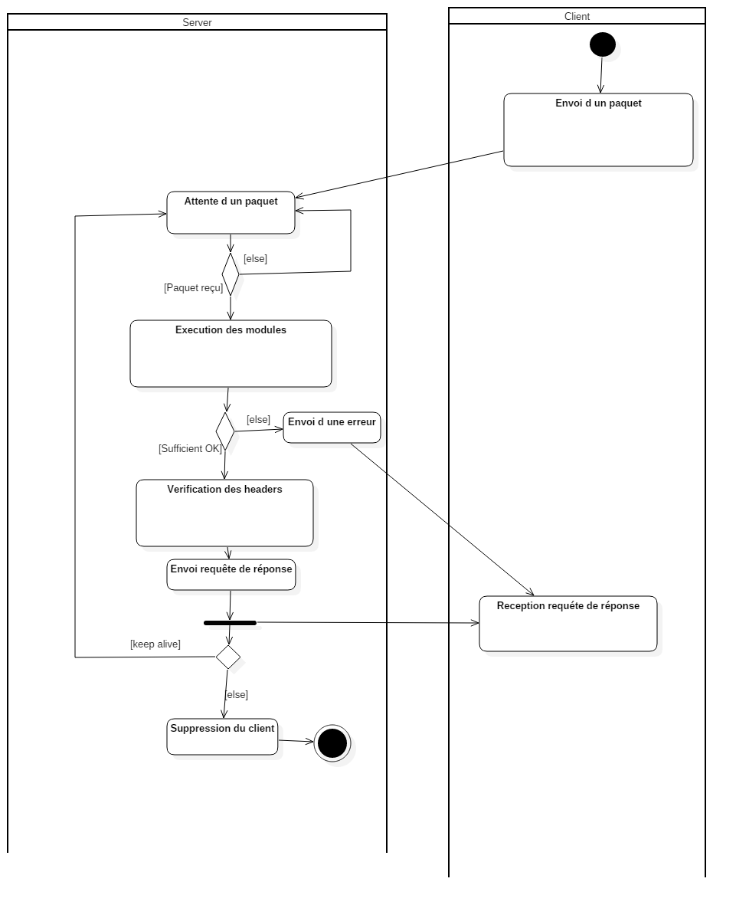

Qu'est-ce que ApiKachu et pourquoi faut-il voter pour elle ?
- Faite pour être flexible et permettre une customisation facile
- Légère et rapide à implémenter
- Nombreuses possibilités au niveau de l'ordre d'exécution des modules
- Une chaîne d'exécution
Comment fonctionne-t-elle ?
Si vous souhaitez mieux comprendre notre API, nous vous conseillons de lire notre FAQ et de regarder notre exemple détaillé et commenté ici.
Qui sommes-nous et comment nous contacter ?
Etudiants à l'origine de l'API
- Mathieu Bourmaud (bourma_m)
- Martin Porrès (porres_m)
- Théo Perraudin (perrau_t)
- Sebastien Cache-Delanos (cache-_s)
- Jordan Chazottes (chazot_a)
- Delphine Poupon (poupon_d)
Nous contacter
Pour tout problème technique, veuillez créer un ticket en suivant le format indiqué dans notre FAQ.
N'hésitez pas à nous contacter via cette adresse : ziapikachu@gmail.com si vous ne trouvez pas le format de ticket adéquat à votre besoin en précisant dans l'objet la nature de votre demande.